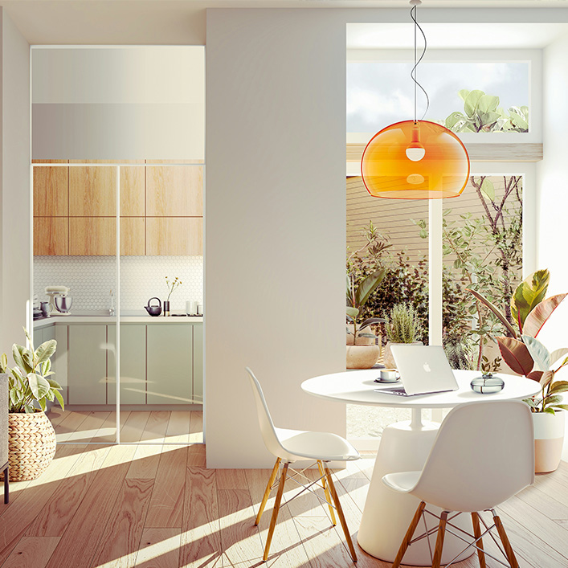
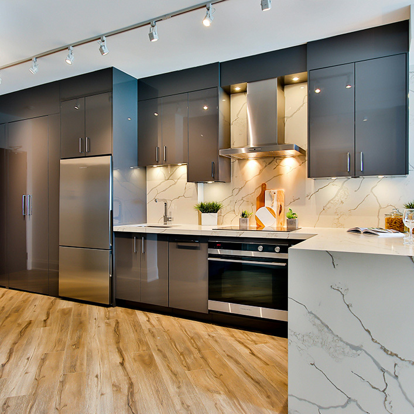

Mulighetens marked
Varslinger
Ny annonse
Meldinger
Min finn
Søk
Søk
Kart
Torget
Eiendom
Reise
Båt
MC
Feriehjem og hytter til leie
Bil og næring
Jobb
Nybrukt mobil
HO
NK
Bilabonnement
Nettbil
Mittanbud
Anbefalinger til deg
Hvorfor anbefaler vi disse anonsene?

10 000 kr
Nesoddtangen
Lys toroms leilighet med have og uteplass

10 000 kr
Nesodden
Sokkelleilighet
800 000 kr
Ålesund
Hel mikrohus paviljong m/ 3 mikrohus selges samlet eller hve